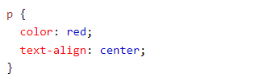
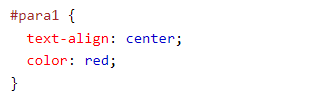

Sintax CSS

O seletor aponta para o elemento HTML que você deseja estilizar.
O bloco de declaração contém uma ou mais declarações separadas por ponto e vírgula.
Cada declaração inclui um nome de propriedade CSS e um valor, separados por dois pontos.
Várias declarações CSS são separadas por ponto e vírgula e os blocos de declaração são cercados por chaves.
Exemplo
Neste exemplo, todos os elementos <p> serão alinhados ao centro, com uma cor de texto vermelha:
- p é um seletor em CSS (ele aponta para o elemento HTML que você deseja estilizar: <p>).
- color é uma propriedade, e red é o valor da propriedade
- text-align é uma propriedade, e center é o valor da propriedade
Seletores CSS
O seletor de elemento seleciona elementos HTML com base no nome do elemento
O seletor de id CSS

O seletor id usa o atributo id de um elemento HTML para selecionar um elemento específico.
O id de um elemento é único dentro de uma página, então o seletor de id é usado para selecionar um elemento único!
Para selecionar um elemento com um id específico, escreva um caractere hash (#), seguido do id do elemento.
Três maneiras de inserir CSS
Existem três maneiras de inserir uma folha de estilo:
- CSS externo
- CSS interno
- CSS embutido
CSS externo
Com uma folha de estilo externa, você pode alterar a aparência de um site inteiro alterando apenas um arquivo! Cada página HTML deve incluir uma referência ao arquivo de folha de estilo externo dentro do elemento <link>, dentro da seção head.
Exemplo

Uma folha de estilo externa pode ser escrita em qualquer editor de texto e deve ser salva com uma extensão .css. O arquivo .css externo não deve conter tags HTML.
CSS interno
Uma folha de estilo interna pode ser usada se uma única página HTML tiver um estilo único.
O estilo interno é definido dentro do elemento <style>, dentro da seção head.

CSS embutido
Um estilo embutido pode ser usado para aplicar um estilo único para um único elemento. Para usar estilos embutidos, adicione o atributo style ao elemento relevante. O atributo style pode conter qualquer propriedade CSS.

Ordem em cascata
Qual estilo será usado quando houver mais de um estilo especificado para um elemento HTML?
Todos os estilos em uma página serão "cascatados" em uma nova folha de estilo "virtual" de acordo com as seguintes regras, onde o número um tem a prioridade mais alta
- Estilo embutido (dentro de um elemento HTML)
- Folhas de estilo externas e internas (na seção principal)
- Padrão do navegador
Portanto, um estilo embutido tem a prioridade mais alta e substituirá os estilos externos e internos e os padrões do navegador.